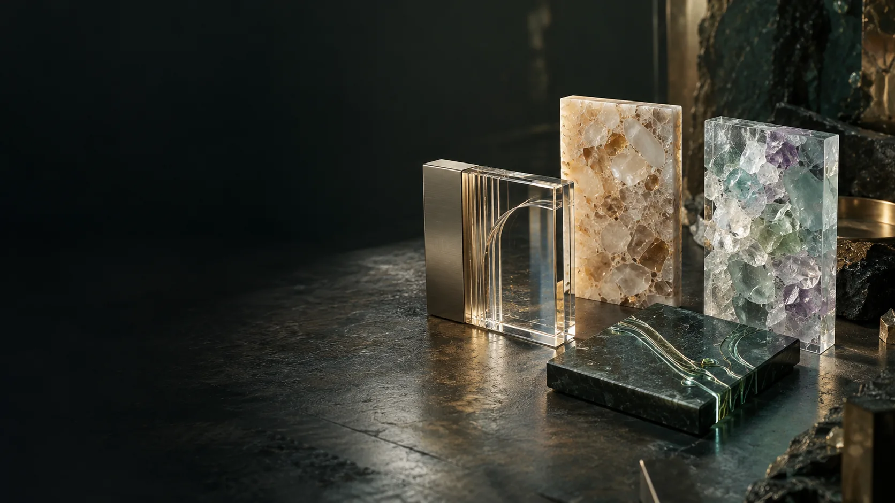

HARDWARE / THE COMPARISON
Four ways into the Geode.
A conventional chamber provides one research integration route. Three Geode generations develop mineral structure, crystalline architecture and eventually material-integrated computation.
A family of configurations.
Each configuration needs an equipment record, operating review and tests of its materials, pressure assembly and installed interfaces.
An active self-reflection workspace.
The Geode needs usable space for haptic touchscreens or VR/XR, wearable sensors and receiver hardware. The seated participant must be able to reach the controls, move comfortably and review records, with equipment stowed clear of entry and assisted exit.
- A reachable adjustable display and a defined VR/XR use envelope, with a headset dock beside the seat.
- A serviceable sensor connection bay, cable management and provision for a compatible wireless receiver where selected.
- Screens and accessories stow alongside the seat, keeping the entry, assisted-transfer route and door operation clear.
- The complete equipment configuration requires review for the actual chamber environment; experience interfaces remain separate from independent chamber controls.
Evidence moves a pathway forward.
A material specimen advances through measured tests to an interface sample, a panel and a complete assembly. A software capability advances through a defined task, permission tests and participant review.
Emergency egress is an acceptance gate.
Entry, door operation, assisted transfer and emergency extraction must conform to the applicable requirements for the actual chamber and site. The project retains dimensioned evidence, a reviewed emergency procedure and rehearsed acceptance before participant use.

Existing seated HBOT
A real seated chamber. A new experience layer.
Discover pathway
Geopolymer Geode
Traceable grains. Cast mineral architecture.
Discover pathway
Crystalline & blend Geode
Quartz, fused silica and an ordered material field.
Discover pathway
Integrated crystalline compute
Computation within the crystalline Geode itself.
Discover pathway| Pathway | Material family | Compute arrangement | Evidence to develop |
|---|---|---|---|
| Existing seated HBOT | Manufacturer-specific seated hard shell | External, separate from chamber controls | Device compatibility, source continuity, operating review |
| Geopolymer Geode | Quartz-rich aggregate and reactive binder | Separate local enclosure and agreed hub resources | Recipe, specimens, panel interfaces and component duties |
| Crystalline & blend Geode | Crystals, glass, ceramics and measured blends | Separate local enclosure and agreed hub resources | Phase identity, bonds, optical/acoustic behaviour |
| Integrated crystalline compute | Crystalline architecture requiring atomically precise manufacturing | Integrated crystalline compute within the Geode | Task fidelity, heat, yield, service and atomic metrology |